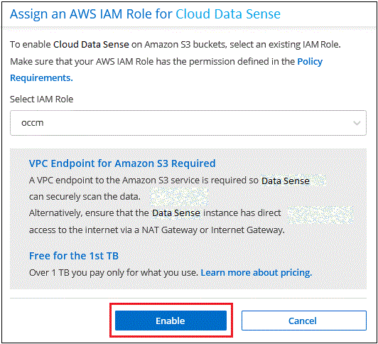
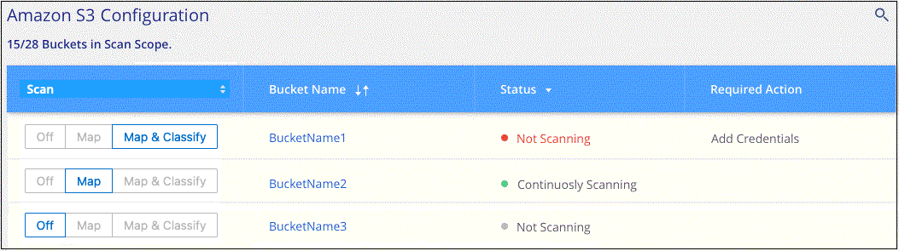

Request doc changes
Request doc changes Edit this page
Edit this page Learn how to contribute
Learn how to contributeGetting started with Cloud Data Sense for Amazon S3
Contributors
Cloud Data Sense can scan your Amazon S3 buckets to identify the personal and sensitive data that resides in S3 object storage. Cloud Data Sense can scan any bucket in the account, regardless if it was created for a NetApp solution.
Quick start
Get started quickly by following these steps, or scroll down to the remaining sections for full details.
 Set up the S3 requirements in your cloud environment
Set up the S3 requirements in your cloud environmentEnsure that your cloud environment can meet the requirements for Cloud Data Sense, including preparing an IAM role and setting up connectivity from Data Sense to S3. See the complete list.
 Deploy the Cloud Data Sense instance
Deploy the Cloud Data Sense instanceDeploy Cloud Data Sense if there isn’t already an instance deployed.
 Activate Data Sense on your S3 working environment
Activate Data Sense on your S3 working environmentSelect the Amazon S3 working environment, click Enable, and select an IAM role that includes the required permissions.
 Select the buckets to scan
Select the buckets to scanSelect the buckets that you’d like to scan and Cloud Data Sense will start scanning them.
Reviewing S3 prerequisites
The following requirements are specific to scanning S3 buckets.
- Set up an IAM role for the Cloud Data Sense instance
-
Cloud Data Sense needs permissions to connect to the S3 buckets in your account and to scan them. Set up an IAM role that includes the permissions listed below. Cloud Manager prompts you to select an IAM role when you enable Data Sense on the Amazon S3 working environment.
{ "Version": "2012-10-17", "Statement": [ { "Effect": "Allow", "Action": [ "s3:Get*", "s3:List*", "s3:PutObject" ], "Resource": "*" }, { "Effect": "Allow", "Action": [ "iam:GetPolicyVersion", "iam:GetPolicy", "iam:ListAttachedRolePolicies" ], "Resource": [ "arn:aws:iam::*:policy/*", "arn:aws:iam::*:role/*" ] } ] } - Provide connectivity from Cloud Data Sense to Amazon S3
-
Cloud Data Sense needs a connection to Amazon S3. The best way to provide that connection is through a VPC Endpoint to the S3 service. For instructions, see AWS Documentation: Creating a Gateway Endpoint.
When you create the VPC Endpoint, be sure to select the region, VPC, and route table that corresponds to the Cloud Data Sense instance. You must also modify the security group to add an outbound HTTPS rule that enables traffic to the S3 endpoint. Otherwise, Data Sense can’t connect to the S3 service.
If you experience any issues, see AWS Support Knowledge Center: Why can’t I connect to an S3 bucket using a gateway VPC endpoint?
An alternative is to provide the connection by using a NAT Gateway.

You can’t use a proxy to get to S3 over the internet.
Deploying the Cloud Data Sense instance
Deploy Cloud Data Sense in Cloud Manager if there isn’t already an instance deployed.
You need to deploy the instance using a Connector deployed in AWS so that Cloud Manager automatically discovers the S3 buckets in this AWS account and displays them in an Amazon S3 working environment.
Note: Deploying Cloud Data Sense in an on-premises location is not currently supported when scanning S3 buckets.
Upgrades to Data Sense software is automated as long as the instance has internet connectivity.
Activating Data Sense on your S3 working environment
Enable Cloud Data Sense on Amazon S3 after you verify the prerequisites.
-
From the Cloud Manager left navigation menu, click Canvas.
-
Select the Amazon S3 working environment.

-
In the Data Sense pane on the right, click Enable.

-
When prompted, assign an IAM role to the Cloud Data Sense instance that has the required permissions.

-
Click Enable.

|
You can also enable compliance scans for a working environment from the Configuration page by clicking the  button and selecting Activate Data Sense. button and selecting Activate Data Sense.
|
Cloud Manager assigns the IAM role to the instance.
Enabling and disabling compliance scans on S3 buckets
After Cloud Manager enables Cloud Data Sense on Amazon S3, the next step is to configure the buckets that you want to scan.
When Cloud Manager is running in the AWS account that has the S3 buckets you want to scan, it discovers those buckets and displays them in an Amazon S3 working environment.
Cloud Data Sense can also scan S3 buckets that are in different AWS accounts.
-
Select the Amazon S3 working environment.
-
In the pane on the right, click Configure Buckets.

-
Enable mapping-only scans, or mapping and classification scans, on your buckets.

To: Do this: Enable mapping-only scans on a bucket
Click Map
Enable full scans on a bucket
Click Map & Classify
Disable scanning on a bucket
Click Off
Cloud Data Sense starts scanning the S3 buckets that you enabled. If there are any errors, they’ll appear in the Status column, alongside the required action to fix the error.
Scanning buckets from additional AWS accounts
You can scan S3 buckets that are under a different AWS account by assigning a role from that account to access the existing Cloud Data Sense instance.
-
Go to the target AWS account where you want to scan S3 buckets and create an IAM role by selecting Another AWS account.

Be sure to do the following:
-
Enter the ID of the account where the Cloud Data Sense instance resides.
-
Change the Maximum CLI/API session duration from 1 hour to 12 hours and save that change.
-
Attach the Cloud Data Sense IAM policy. Make sure it has the required permissions.
{ "Version": "2012-10-17", "Statement": [ { "Effect": "Allow", "Action": [ "s3:Get*", "s3:List*", "s3:PutObject" ], "Resource": "*" }, ] }
-
-
Go to the source AWS account where the Data Sense instance resides and select the IAM role that is attached to the instance.
-
Change the Maximum CLI/API session duration from 1 hour to 12 hours and save that change.
-
Click Attach policies and then click Create policy.
-
Create a policy that includes the "sts:AssumeRole" action and specify the ARN of the role that you created in the target account.
{ "Version": "2012-10-17", "Statement": [ { "Effect": "Allow", "Action": "sts:AssumeRole", "Resource": "arn:aws:iam::<ADDITIONAL-ACCOUNT-ID>:role/<ADDITIONAL_ROLE_NAME>" }, { "Effect": "Allow", "Action": [ "iam:GetPolicyVersion", "iam:GetPolicy", "iam:ListAttachedRolePolicies" ], "Resource": [ "arn:aws:iam::*:policy/*", "arn:aws:iam::*:role/*" ] } ] }The Cloud Data Sense instance profile account now has access to the additional AWS account.
-
-
Go to the Amazon S3 Configuration page and the new AWS account is displayed. Note that it can take a few minutes for Cloud Data Sense to sync the new account’s working environment and show this information.

-
Click Activate Data Sense & Select Buckets and select the buckets you want to scan.
Cloud Data Sense starts scanning the new S3 buckets that you enabled.